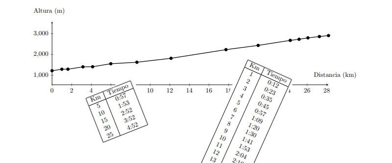

Media Maratón Club Tenis La Paz 2016
Tablas de tiempos parciales
Introducción
El próximo Domingo 04 diciembre 2016 se correrá la Media Maratón del Sur. El objetivo de los siguientes documentos pdf es ayudar a lograr llegar a la meta en un tiempo predeterminado.
La pendiente del recorrido cambia permanentemente lo cual dificulta encontrar el ritmo adecuado en las diferentes secciones. Las siguientes listas te ayudarán a lograr tu objetivo.
Enlace del evento: http://www.ctlp.bo/mediamaraton
Recomendaciones
- Si corres con un celular que cuenta con una aplicación de running (Runkeeper, Strava, etc) la puedes configurar para que te vaya dictando los tiempos parciales en cada kilómetro.
- Si corres con reloj puedes usar una de las listas que contiene los tiempos parciales en lugares predeterminados.
- Imprime el documento, recorta la lista que más te conviene y plastificala para que no se dañe con el sudor.
- Estudia bien la lista antes de la competencia.
- Si usas una de las listas que continen tiempos parciales según lugares predeterminados asegúrate de saber dónde quedan exactamente para que no los tengas que buscar durante la carrera.
- Controla tus tiempos parciales regularmente.
Las listas están diseñadas para que corras con una intensidad (no velocidad) constante. Te ayudarán a evitar el error común de partir demasiado rápido y ya no tener las reservas suficientes en los últimos kilómetros. En la Media Maratón del Sur esto es aún mas importante que en otras competencias ya que los últimos 4 kilómetros son de subida.
Listas
Contacto
Si tienes alguna duda, comentario o recomendación no dudes en contactarme.
Kevin Bauer - urupica@gmail.com